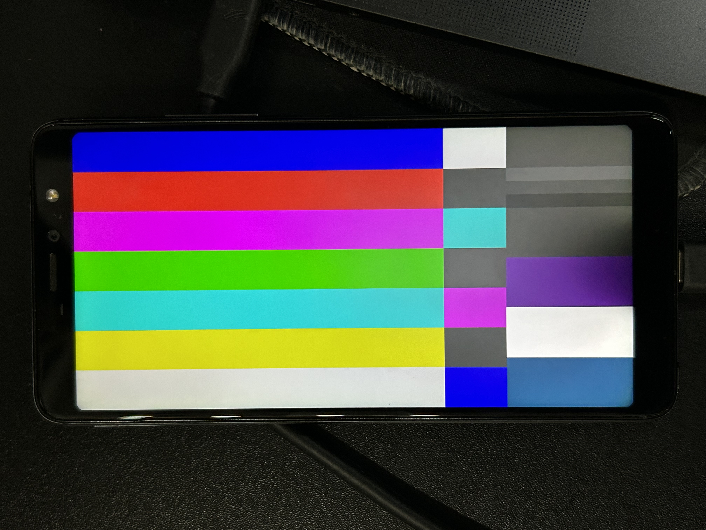

Vsmart Active 1 (vsmart-zangyapro)
| This device has been tested with postmarketOS, but its device package has not yet been added to the postmarketOS repositories. This means that it cannot be selected in pmbootstrap. |
|
 Vsmart Active 1 running postmarketOS | |
| Manufacturer | Vsmart |
|---|---|
| Name | Active 1 |
| Codename | vsmart-zangyapro |
| Model | PQ6001 |
| Released | 2018 |
| Type | handset |
| Hardware | |
| Chipset | Qualcomm Snapdragon 660 (SDM660) |
| CPU |
4x 2.2 GHz Kryo 260 Gold 4x 1.8 GHz Kryo 260 Silver |
| GPU | Adreno 512 |
| Display | 1080 x 2160 LCD, Himax HX83112A (DJN) |
| Storage | 64 GB |
| Memory | 4 GB |
| Architecture | aarch64 |
| Software | |
Original software
The software and version the device was shipped with.
|
Android 9 |
Extended version
The most recent supported version from the manufacturer.
|
Android |
| FOSS bootloader | no |
| postmarketOS | |
| Category | testing |
Pre-built images
Whether pre-built images are available from the postmarketOS Installation page.
|
no |
Mainline
Instead of a Linux kernel fork, it is possible to run (Close to) Mainline.
|
yes |
pmOS kernel
The kernel version that runs on the device's port.
|
Mainline 7.0.x |
Unixbench score
Unixbench Whetstone/Dhrystone score. See Unixbench.
|
0.0 |
| Firmware package |
firmware-vsmart-zangyapro out-of-tree
|
{kind=link}
Flashing
Whether it is possible to flash the device with
pmbootstrap flasher. |
Works
|
|---|---|
USB Networking
After connecting the device with USB to your PC, you can connect to it via telnet (initramfs) or SSH (booted system).
|
Works
|
Internal storage
eMMC, SD cards, UFS...
|
Works
|
SD card
Also includes other external storage cards.
|
Untested
|
Battery
Whether charging and battery level reporting work.
|
Partial
|
Screen
Whether the display works; ideally with sleep mode and brightness control.
|
Works
|
Touchscreen |
Broken
|
| Multimedia | |
3D Acceleration |
Works
|
Audio
Audio playback, microphone, headset and buttons.
|
Untested
|
Camera |
Untested
|
| Connectivity | |
WiFi |
Works
|
Bluetooth |
Works
|
GPS |
Untested
|
NFC
Near Field Communication
|
Untested
|
| Modem | |
Calls |
Untested
|
SMS |
Untested
|
Mobile data |
Untested
|
| Miscellaneous | |
FDE
Full disk encryption and unlocking with unl0kr.
|
Untested
|
USB OTG
USB On-The-Go or USB-C Role switching.
|
Untested
|
Fingerprint
Fingerprint reader.
|
Untested
|
| Sensors | |
Accelerometer
Handles automatic screen rotation in many interfaces.
|
Untested
|
Magnetometer
Sensor to measure the Earth's magnetism
|
Untested
|
Ambient Light
Measures the light level; used for automatic screen dimming in many interfaces.
|
Untested
|
Proximity |
Untested
|
Haptics |
Untested
|
Power Sensor
Sensor to monitor current, voltage and power. Not fuel gauge!
|
Untested
|
|
This device is based on the Snapdragon 660. See the SoC page for common tips, guides and troubleshooting steps |
The Vsmart Active 1 (codename vsmart-zangyapro) is a 2018 Snapdragon 660 handset. It is a rebrand of the BQ Aquaris X2 Pro and very close to the Xiaomi Mi A2 (xiaomi-jasmine_sprout); this port is derived from the latter and shares its mainline kernel. It is used here as a small headless home server.
The Vsmart bootloader enforces dm-android-verity and injects skip_initramfs /
|
Contributors
Users owning this device
Unlocking the bootloader
| WARNING: Doing this will ERASE ALL DATA on your device. Please backup all your personal data before continuing! |
- Enable OEM unlocking and USB debugging in Android developer options.
- Reboot to fastboot (
+
) and run:
fastboot flashing unlock fastboot flashing unlock_critical
fastboot oem unlock is not supported on this bootloader.
How to enter flash mode
Hold + to boot into fastboot mode.
Installation
Follow the Installation guide. The mainline kernel sidesteps the OEM verity, so a plain boot image works:
pmbootstrap init # vendor: vsmart, device: zangyapro
pmbootstrap install
pmbootstrap flasher flash_kernel # -> boot partition
pmbootstrap flasher flash_rootfs # -> userdata
fastboot reboot
To test without flashing: pmbootstrap flasher boot (or fastboot boot boot.img).
Flashing the rootfs over a 32-bit fastboot.exe (Windows): large
simg2simg ... 20000000) and flash them sequentially; a USB-2.0 hub improves stability. |
Running as a headless server
- Power draw (idle: WiFi + Bluetooth + console) is about 2.4 W; under heavy CPU load ~4-5 W.
- The 3100 mAh battery (manufacturer rating; the device tree uses a 3000 mAh design value for the fuel
gauge) acts as a built-in UPS: at idle it lasts roughly ~4.5 h from 100% (~3.5 h from 80%) on battery alone. Figures are indicative — computed from the 3000 mAh design figure on a used unit with a degraded battery.
-
qbootctl(hard dependency) marks the active A/B slot "successful" at every boot.
Without it the bootloader counts down the slot retry counter and eventually drops to fastboot.
- Connect over USB (
ssh user@172.16.42.1) or WiFi. Bluetooth auto-starts at boot.
|
WARNING: Charging needs a real ≥2 A wall charger. BC1.2 detection works: a weak/laptop (SDP) port is
capped at ~450 mA, less than the running load, so the battery slowly drains even while "Charging". A 2 A DCP
charger pulls ~1.5 A and charges at ~1.1 A while running. A warm |
Forcing USB Host Mode
| Only needed if you want USB host (drive/hub/keyboard); skip for plain headless use. Not yet
verified on this device — the Active 1 device tree currently sets |
This device shares the SDM660 kernel linux-postmarketos-qcom-sdm660 with the
Xiaomi Mi A2: the DWC3 controller does not
auto-switch to host mode. On the Mi A2 the shared kernel is rebuilt with Host only mode and a
powered USB-C hub is required (the port does not supply VBUS):
pmbootstrap kconfig edit linux-postmarketos-qcom-sdm660
# Device Drivers -> USB support -> DWC3 -> DWC3 Mode Selection -> Host only
pmbootstrap build linux-postmarketos-qcom-sdm660 --force
pmbootstrap flasher flash_kernel
Hardware
| Component | Chip |
|---|---|
| SoC | Qualcomm Snapdragon 660 (SDM660) |
| GPU | Adreno 512 (freedreno, zap shader a512_zap.mbn)
|
| Display / Touch | Himax HX83112A (DJN), 1080x2160 — touch in-cell parked |
| WiFi / Bluetooth | Qualcomm WCN3990 (ath10k board-2.bin)
|
| PMIC | Qualcomm PM660 + PM660L |
| Fuel gauge | PMI8998 (pmi8998_fg)
|
Quirks / Known issues
Touchscreen (Himax HX83112A) — Parked
Touch IC on i2c-0 (c175000.i2c) at 0x48 (irq gpio67, reset gpio66), product id
0x83112a. The mainline himax_hx83112b driver only knows 0x83112b; the wrong
variant bound and probe failed. Parked; not needed for headless use.
| TODO: Add the 0x83112a chip variant to the HX83112x touch driver. |
microSD slot
Enabled in the device tree but not yet runtime-tested (no card on hand).
WiFi MAC address is randomised
The WCN3990 has no MAC stored for mainline to read, so the WiFi interface gets a random MAC on every
boot. WiFi itself works; if you rely on DHCP reservations, pin a fixed MAC (e.g. a NetworkManager
cloned-mac-address setting or a systemd-networkd .link file).
Audio
Untested — not used on this headless server.
Battery percentage inaccurate after a flat discharge
pmi8998_fg reads state-of-charge directly from the fuel-gauge register (no DT OCV table). After a
flat discharge the FG loses its reference until a full charge cycle recalibrates it.
Modem (calls / SMS / data)
| TODO: Test the modem — firmware is present but calls/SMS/data are untested. |
Dropped to fastboot after running flat
A/B device: if the active slot is not marked "successful", the bootloader decrements its retry counter each
power-cycle and eventually lands in fastboot. Recovery: fastboot set_active a && fastboot reboot.
Fixed permanently by the qbootctl dependency.
Notes
- Display works through the real DPU + DSI + panel pipeline. The mainline
panel-himax-hx83112a
(Fairphone 3, 1080x2340) was extended with a djn,a1-hx83112a 1080x2160 variant for this device.
- WiFi/BT use the same WCN3990 as the Mi A2; the firmware (
board-2.bin) lives in the rootfs
(firmware-vsmart-zangyapro), so it is absent duringfastboot bootprobes.
See also
- Xiaomi Mi A2 (xiaomi-jasmine_sprout) — same SoC, shared kernel
- Help:Device Page
- Chat room: SDM660 devices development
-
Kernel source (sdm660-mainline/linux) — series merged into
qcom-sdm660-7.0.y(PR #186, 2026-06-20) - Port working tree (fudio101/active1-pmos)